・形状記憶合金の機能・原理・特性を学習する。
・CADによる作図の基礎を学び部品を製作する。
・実験結果から現象を説明する物理法則を推定する。
・WEB上の情報。例えば
・ChatGPT、Gemini
・その他
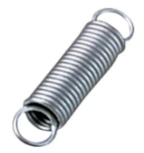
形状記憶合金製バネ
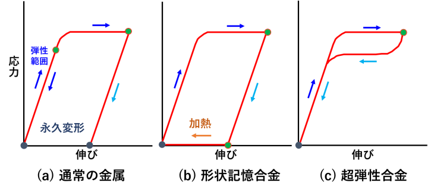
応力-ひずみ曲線の概念図
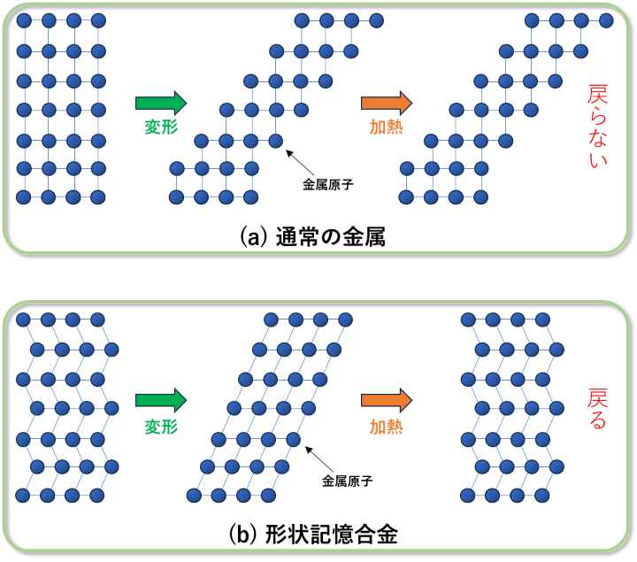
原子の移動と形状変化の模式図
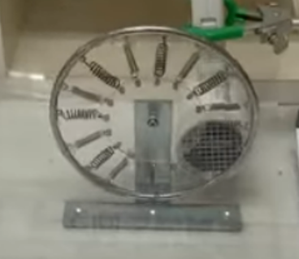
観覧車模型の例
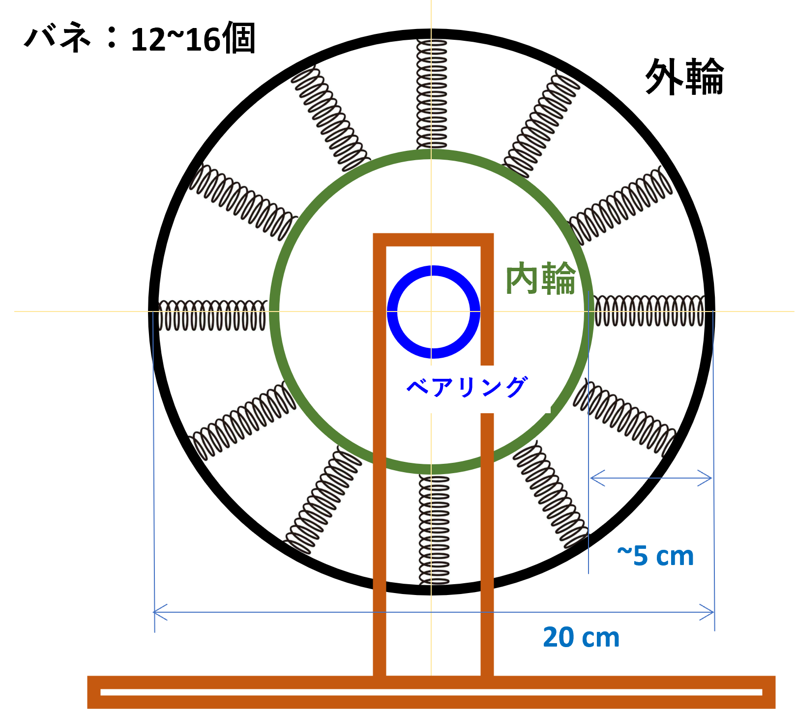
自然長が3~4cm程度の形状記憶合金製のバネを、5～6cmに伸ばしながら放射状に配置し、リング(観覧車)を製作する。内輪は外輪に引っ張られながら平衡して安定する。
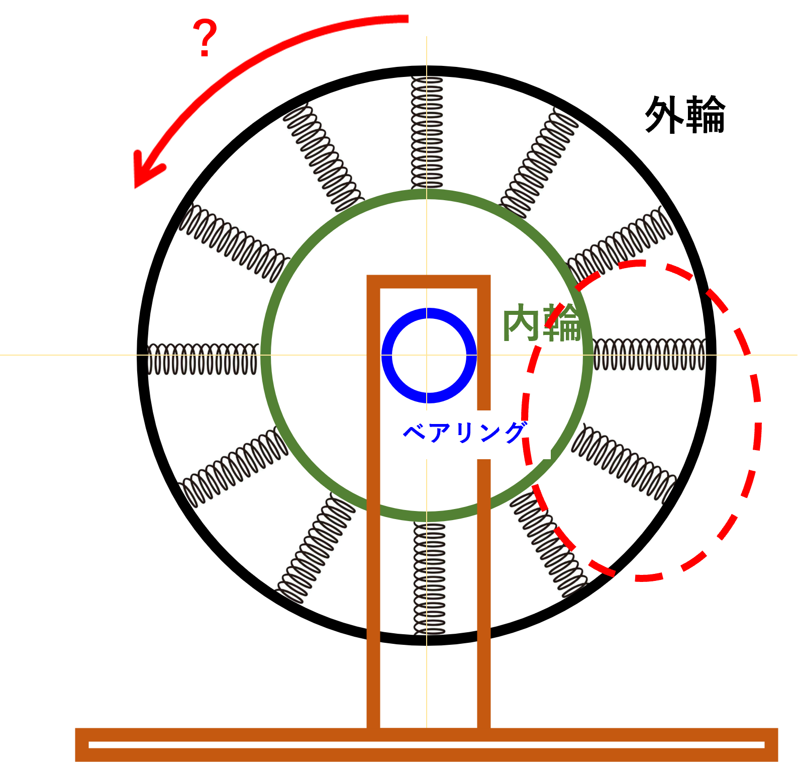
輪の片側(図では右側)の一部(例えば点線部)を変態点以上に熱するとバネに元にもどろうとする力が働く。この力は室温の左側より強いので右側のバネが縮む。すると、左側に重心が移り回転モーメントが発生しリングは回転する。
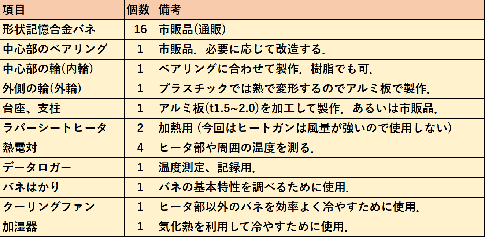
・メーカー：ナリカ
・商品名：形状記憶合金
・品番：P70-3806
・材質：ニッケルチタン合金
・変位点：40～50℃
・寸法：φ0.75x6(巻径)x16
・フック付き
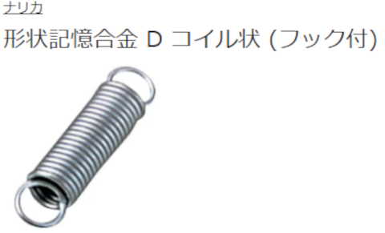
形状記憶合金製バネ
・メーカー：八光電機
・商品名：シリコンラバーヒータ―
・品番：SBH2133
・寸法：100 mm x 100 mm x t1.5 mm
・容量：100 V 入力。60 W
・材質：ニッケル-クロム系金属発熱体。リード線はNi導線
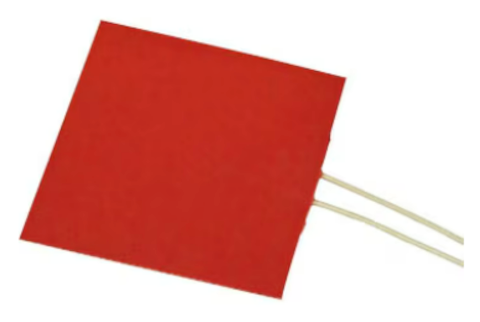
シリコンラバーヒータ―
TiNi形状記憶合金コイルばねの特性(2026/4)
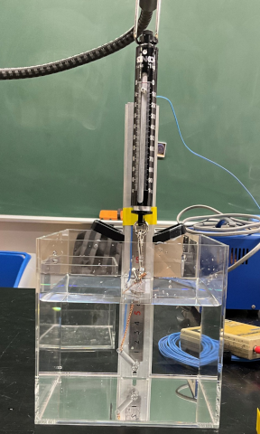
セットアップ
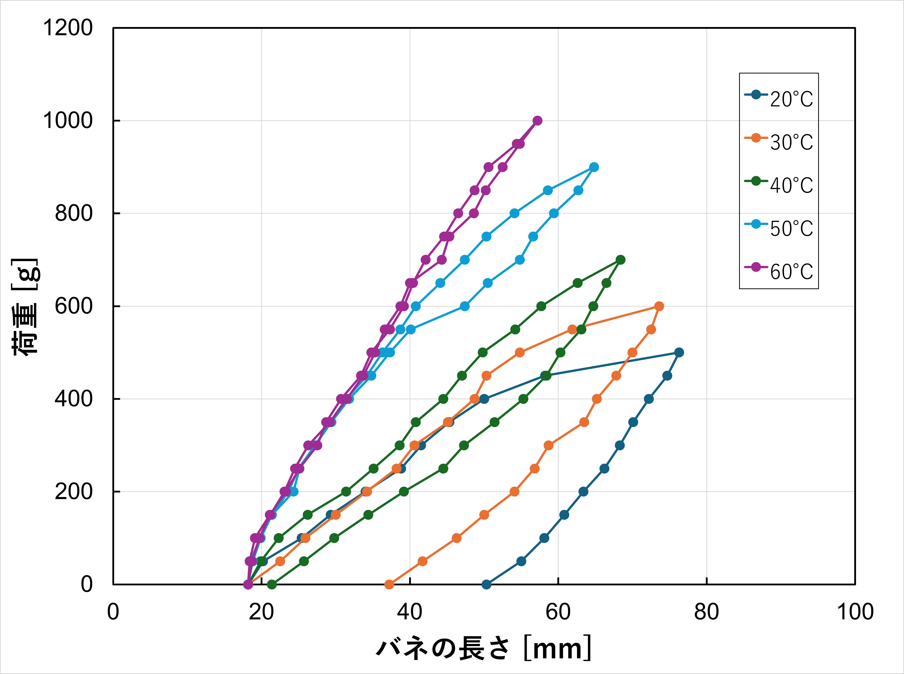
各温度でのバネの長さと引張り力。線の傾きがバネ定数()となる。
温度が高い時、力を緩めると元の線を辿って元の長さに戻る。
温度が低い時、力を弱めると伸びは元に戻らない。加熱すると元にもどる。
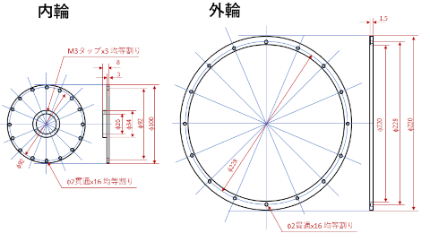
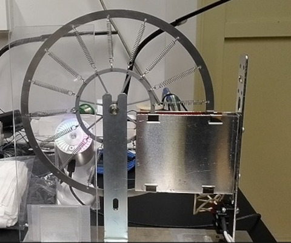
組み立てた観覧車
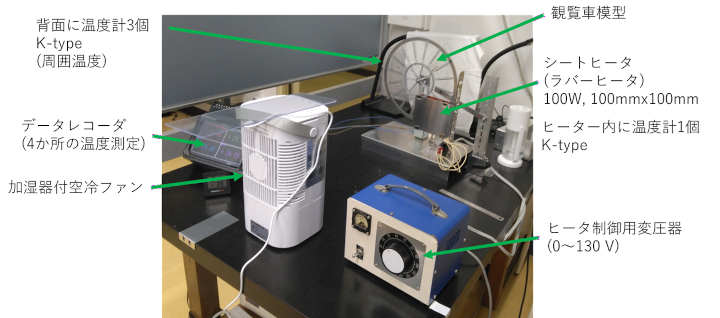
実験装置全体図
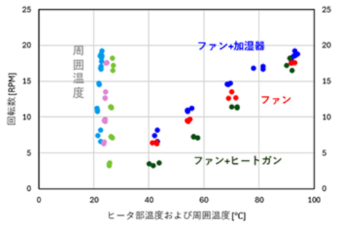
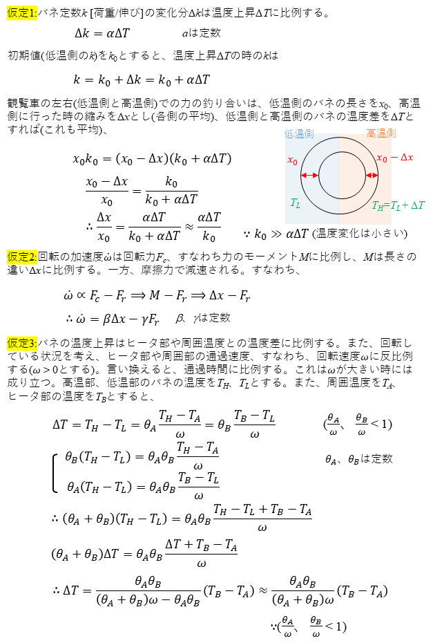
を大きくする ⇒ の温度変化が大きい動作領域を使う。
を大きくする ⇒ 直径を大きくする？慣性モーメントは大きくなるが。
を小さくする ⇒ 抵抗(摩擦)を小さくする。
、を大きくする ⇒ バネとヒータ、周囲との熱伝導を大きくする。風量？